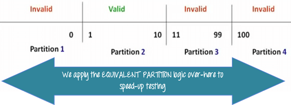
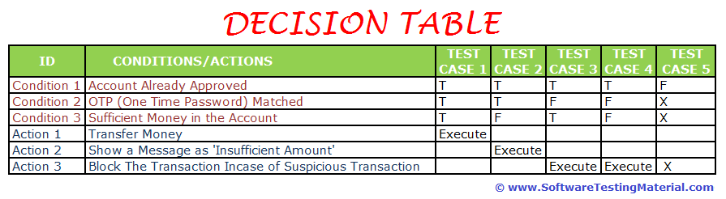
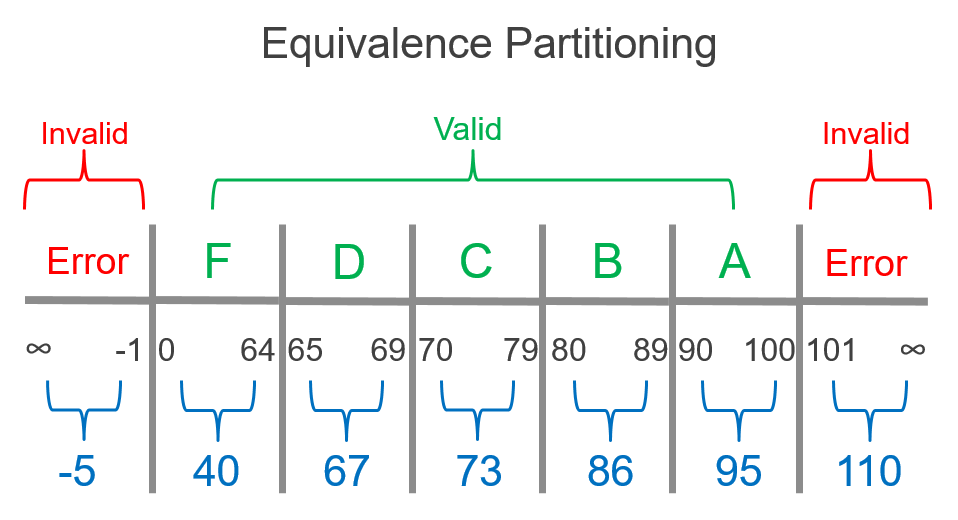
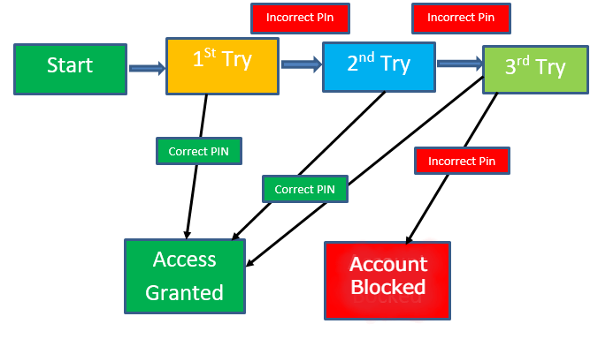
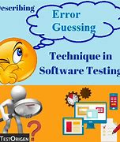
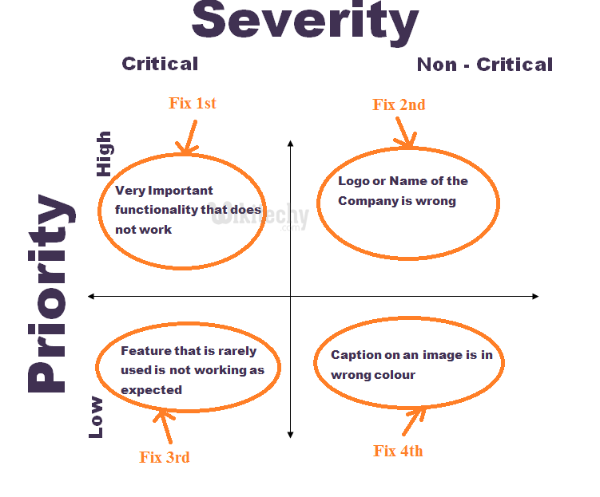
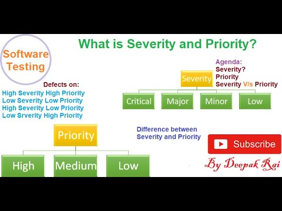

Software Testing Techniques
- 1. Boundary value Analysis
Boundary testing is the process of testing between extreme ends or boundaries between partitions of the input values.

- 2. Decision Table Testing
Decision table testing is black box test design technique to determine the test scenarios for complex business logic.

- 3. Equivalence partitioning
Equivalence partitioning is a black-box testing technique that applies to all levels of testing.

- 4. State Transition Testing
State Transition Testing is a black box testing technique in which changes made in input conditions cause state changes or output changes in the Application under Test(AUT). State transition testing helps to analyze behaviour of an application for different input conditions. Testers can provide positive and negative input test values and record the system behavior.

- 5. Error guessing Techniques
The main purpose of this technique is to guess possible bugs in the areas where formal testing would not work.

Bug Severty and priority
- Bug severity
The severity of a defect decides the impact on the application

- Bug priority
Priority refers to the order in which a developer should address a fault
